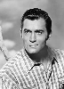
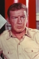
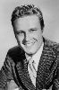
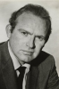

Also known as:The Bounty Man (original title)
Country:United States, 73 minutes
Spoken languages:
Genres:Western, Sci-Fi
Director(s):John Llewellyn Moxey
Writer(s):Jim Byrnes
Video Codec:Unknown
Number: 1141


Certification:NR
Storyline:
Kinkaid is a rugged, hard-driving bounty hunter, determined to find outlaw Billy Riddle. He tracks Billy, takes him captive, and starts the long trek to justice. However, this journey may lead him to dire consequences... a gang of cut-throats headed by Angus Keough is pursuing them, after the bounty for themselves.
Cast:    
Medium: Original DVD,
Comments: Part of: Grindhouse Experience
Loaned: No
Aspect ratio: Unknown